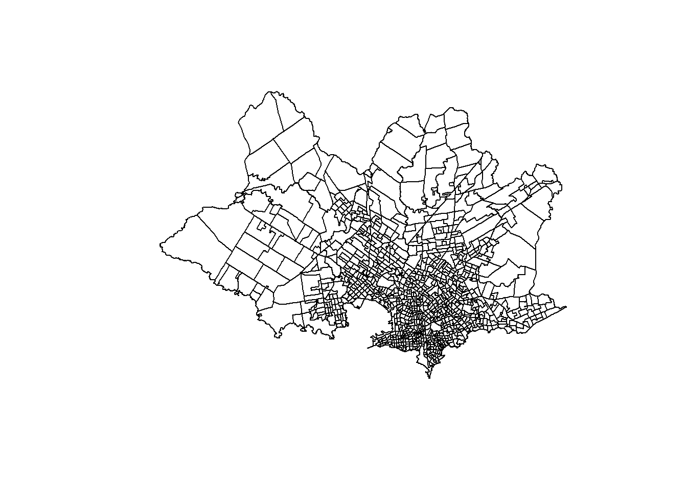
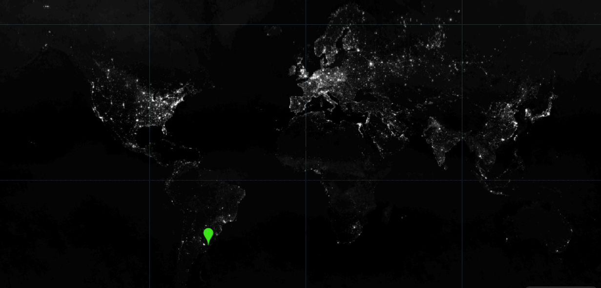
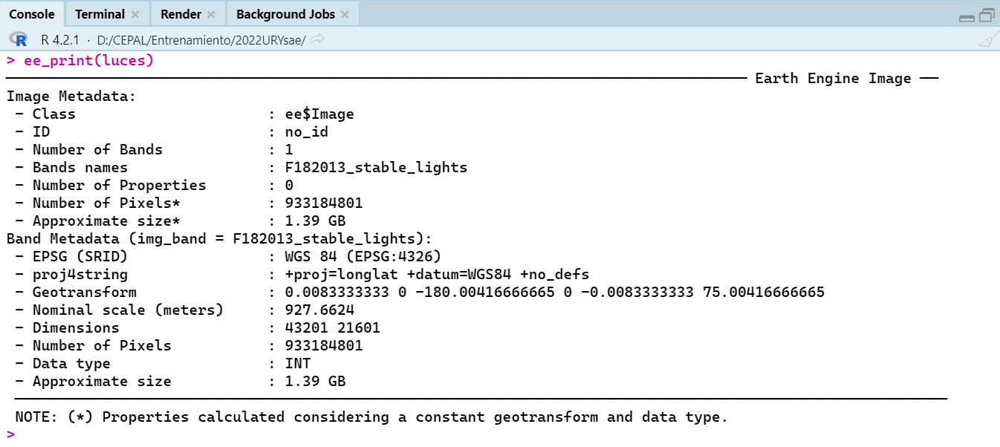
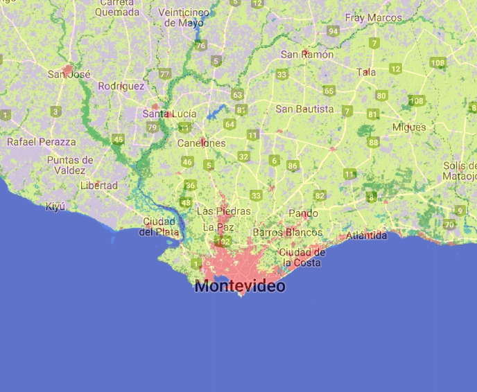
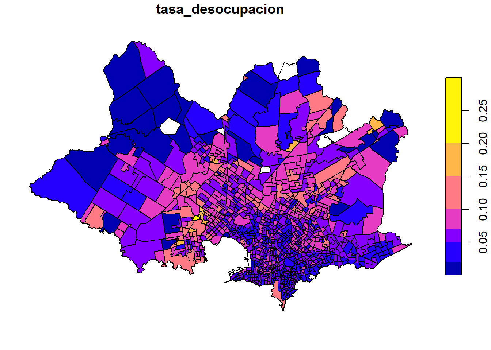
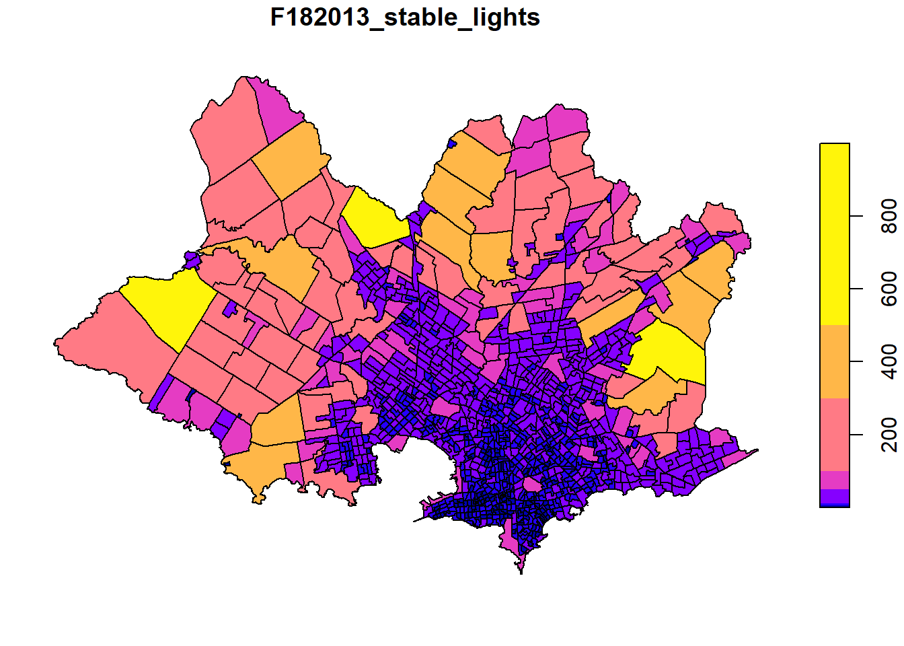
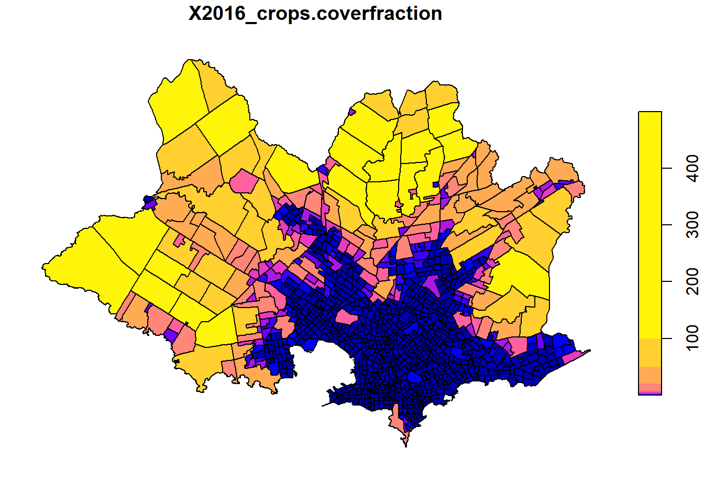
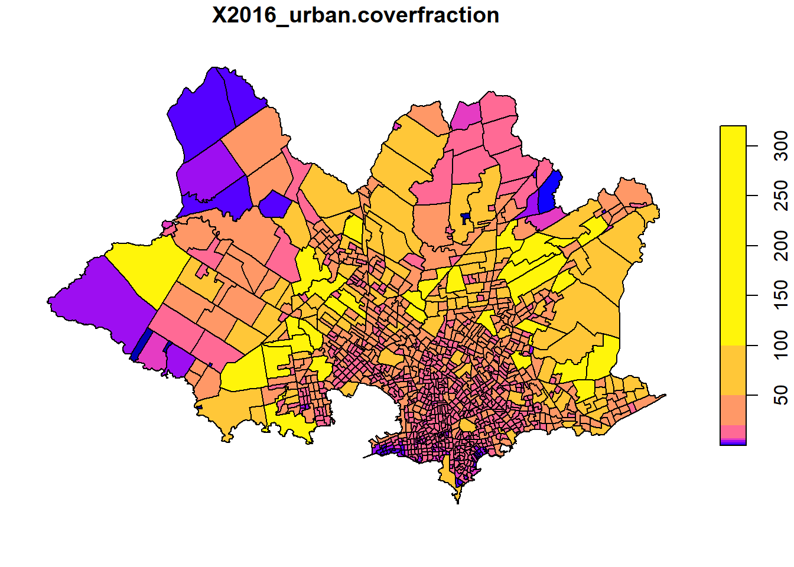

Fay Herriot en R y STAN (Imagenes satelitales)
CEPAL - División de Estadísticas Sociales
Uso de imágenes satalitales y SAE
Uno de los artículo pioneros de estimación de áreas pequeñas fue el artículo de Singh, R, et. al. (2002) el cual abordó la estimación del rendimiento de cultivos para los tehsil (unidad subadministrativa) del distriyo Rohtak district en Haryana (India).
Las imagénes raster representan el mundo mediante un conjunto de celdas contiguas igualmente espaciadas conocidas como pixeles, estas imágenes tienen información como un sistema de información geográfico, Un sistema de referencia de coordenadas. Las imágenes almacenan un identificador, un valor en cada pixel (o un vector con diferentes valores) y cada celda tiene asociada una escala de colores.
Las imágenes pueden obtenerse crudas y procesadas, estas primeras contienen solamente las capas de colores, las segundas contienen también valores que han sido procesados en cada celda (índices de vegetación, intensidad lumínica, tipo de vegetación).
La información cruda puede utilizarse para entrenar características que se desean entrenar (carreteras, tipo de cultivo, bosque / no bosque), afortunadamente en Google Earth Engine encontramos muchos indicadores procesadas asociadas a un pixel. Estos indicadores pueden agregarse a nivel de un área geográfica.
Fuentes de datos de imágenes satelitales
Algunas de las principales fuentes de imágenes satalitales son:
http://earthexplorer.usgs.gov/
https://lpdaacsvc.cr.usgs.gov/appeears/
https://search.earthdata.nasa.gov/search
https://scihub.copernicus.eu/
https://aws.amazon.com/public-data-sets/landsat/
Sin embargo la mayor parte de estas fuentes están centralizadas en Google Earth Engine que permite buscar fuentes de datos provenientes de imágenes satelitales. GEE se puede manejar porm medio de APIS en diferentes lenguajes de programación: Javascript (por defecto), Python y R (paquete rgee).
Google Earth Eninge
Crear una cuenta en link, una vez que se ingrese a la cuenta puede buscarse los conjuntos de datos de interés:
Una vez se busque el conjunto de datos se puede abrir un editor de código brindado por google en Javascript.
Copiar y pegar la sintaxis que brinda el buscador de conjunto de datos para visualizar la imagen raster y disponer de sentencias que permitan la obtención del conjunto de datos de interés posteriormente en R

Instalación de rgee
Descargar e instalar anaconda o conda. (https://www.anaconda.com/products/individual)
Abrir Anaconda prompt y configurar ambiente de trabajo (ambiente python rgee_py) con las siguientes sentencias:
conda create -n rgee_py python=3.9
activate rgee_py
pip install google-api-python-client
pip install earthengine-api
pip install numpy- Listar los ambientes de Python disponibles en anaconda prompt
conda env list- Una vez identificado la ruta del ambiente ambiente rgee_py definirla en R (no se debe olvidar cambiar \ por /).
- Instalar
reticulateyrgee, cargar paquetes para procesamiento espacial y configurar el ambiente de trabajo como sigue:
library(reticulate) # Conexión con Python
library(rgee) # Conexión con Google Earth Engine
library(sf) # Paquete para manejar datos geográficos
library(dplyr) # Paquete para procesamiento de datos
rgee_environment_dir = "C://Users//guerr//.conda//envs//rgee_py"
# Configurar python (Algunas veces no es detectado y se debe reiniciar R)
reticulate::use_python(rgee_environment_dir, required=T)
rgee::ee_install_set_pyenv(py_path = rgee_environment_dir, py_env = "rgee_py")
Sys.setenv(RETICULATE_PYTHON = rgee_environment_dir)
Sys.setenv(EARTHENGINE_PYTHON = rgee_environment_dir)- Una vez configurado el ambiente puede iniciarlizarse una sesión de Google Earth Engine como sigue:
rgee::ee_Initialize(drive = T)Notas:
Se debe inicializar cada sesión con el comando
rgee::ee_Initialize(drive = T).Los comandos de javascript que invoquen métodos con “.” se sustituyen por signo peso, por ejemplo:
ee.ImageCollection().filterDate() # Javascript
ee$ImageCollection()$filterDate() # RDescargar información satelital
- Paso 1: disponer de los shapefile
URY_SEGM <- read_sf("../Shape/ine_seg_11.shp") %>%
filter(nombdepto == "MONTEVIDEO") %>%
mutate(
mpio = str_pad(codsec, width = 4, pad = "0"),
segm = str_pad(codseg, width = 7, pad = "0")
)
plot(URY_SEGM["geometry"])
- Paso 2: Seleccionar el archivo de imágenes que desea procesar, para nuestro ejemplo luces nocturnas.

luces <- ee$ImageCollection("NOAA/DMSP-OLS/NIGHTTIME_LIGHTS") %>%
ee$ImageCollection$filterDate("2013-01-01", "2014-01-01") %>%
ee$ImageCollection$map(function(x) x$select("stable_lights")) %>%
ee$ImageCollection$toBands()
- Paso 3: Descargar la información
## Tiempo 5 minutos
URY_luces <- ee_extract(
x = luces,
y = URY_SEGM["segm"],
ee$Reducer$sum(),
sf = FALSE
)Repetir la rutina para la información de urbanismo.

## Tiempo 5 minutos
tiposuelo <-
ee$ImageCollection("COPERNICUS/Landcover/100m/Proba-V-C3/Global") %>%
ee$ImageCollection$filterDate("2016-01-01", "2016-12-31") %>%
ee$ImageCollection$map(function(x){
x$select("urban-coverfraction", "crops-coverfraction")}) %>%
URY_urbano_cultivo <- ee_extract(
x = tiposuelo,
y = URY_SEGM["segm"],
ee$Reducer$sum(),
sf = FALSE
) - Paso 4 consolidar la información.
tasa_desocupacion <- URY_luces %>%
full_join(URY_urbano_cultivo)Los resultados se muestran en el siguiente mapa



